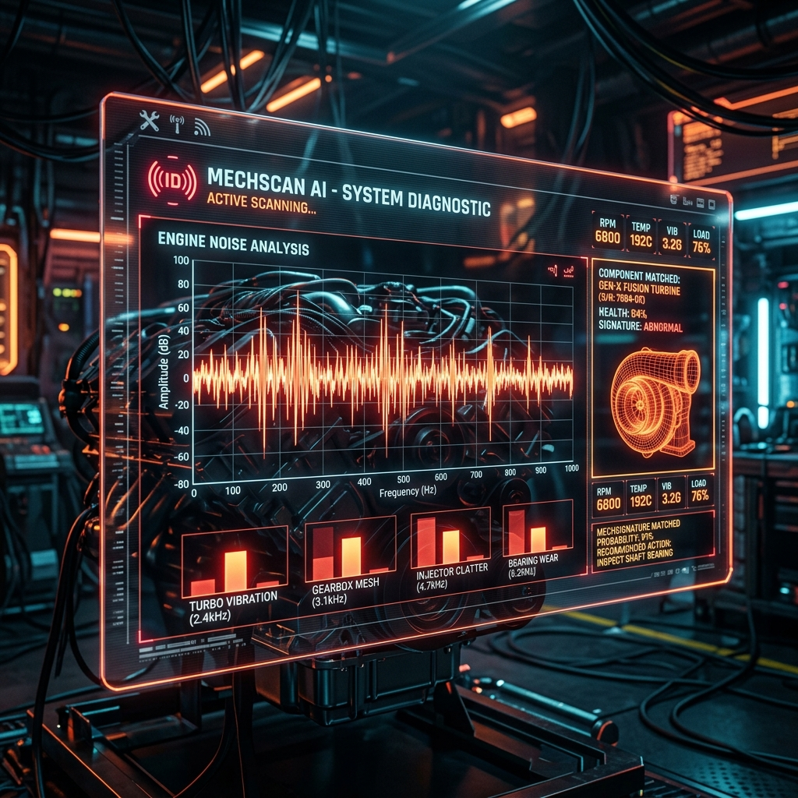

Meet Your New Digital Foreman.
Tackling home repairs shouldn't feel like a guessing game.
From washing machines to HVAC systems, get step-by-step instructions and local part availability at Home Depot or AutoZone right here in Killeen.
It's like having a master mechanic in your pocket.
LISTEN & FIX
"Shazam for Machines". Acoustic fingerprinting and RAG-grounded repairs.
